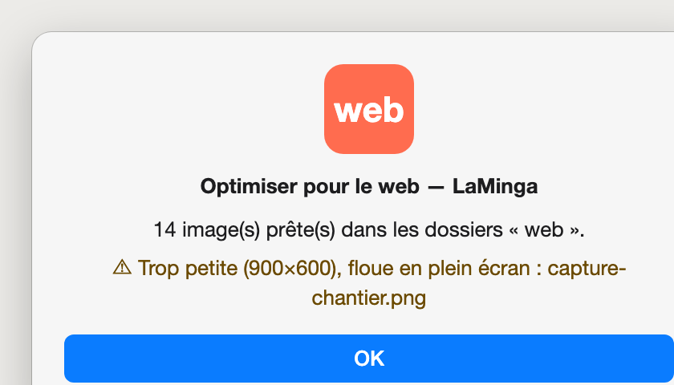
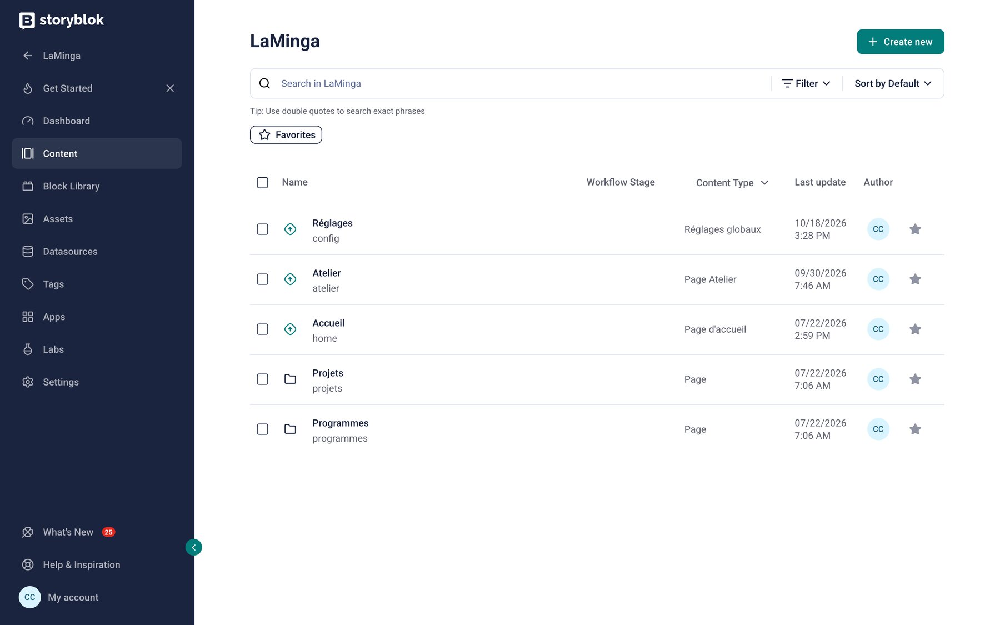
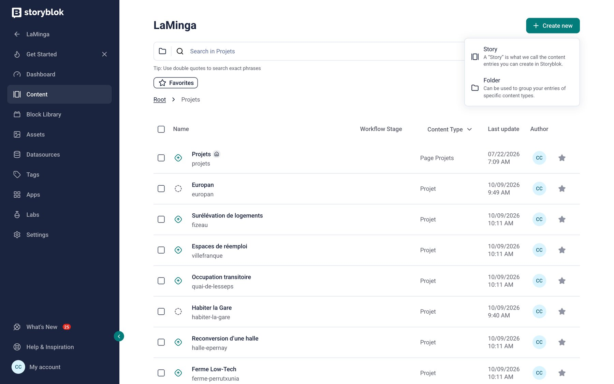
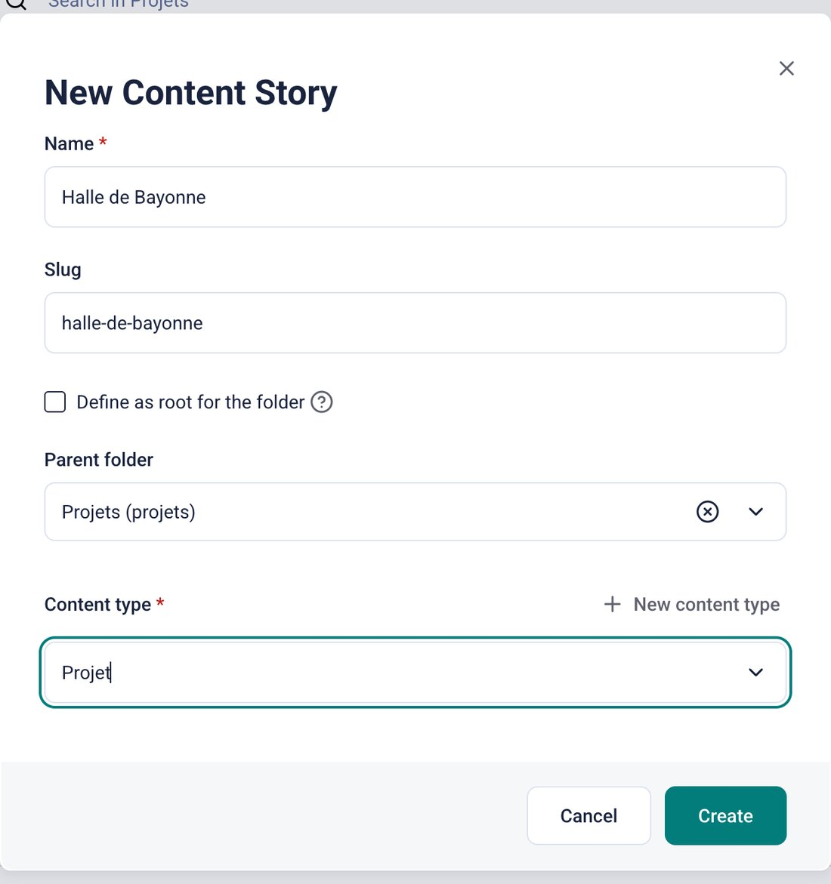
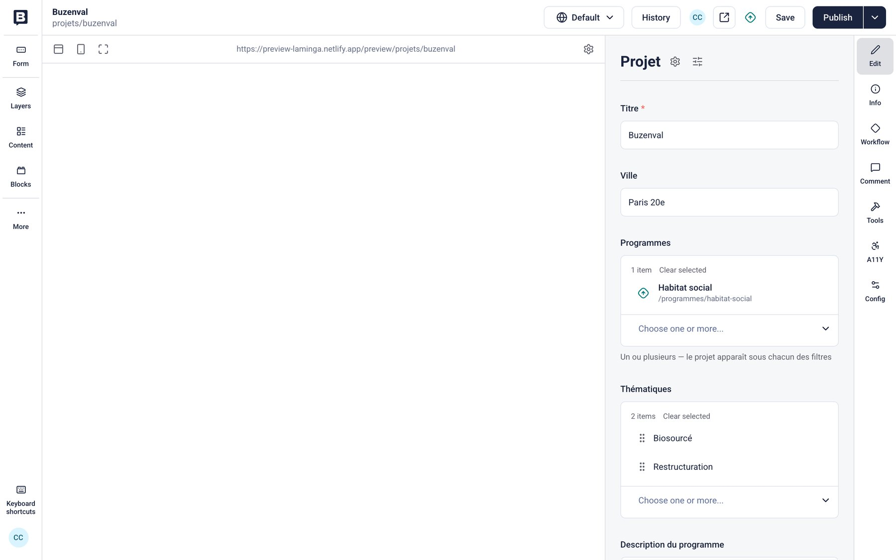
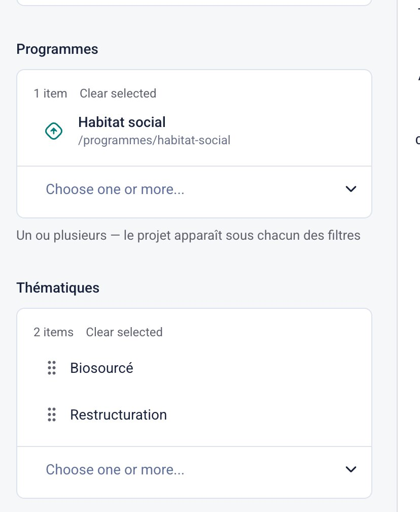
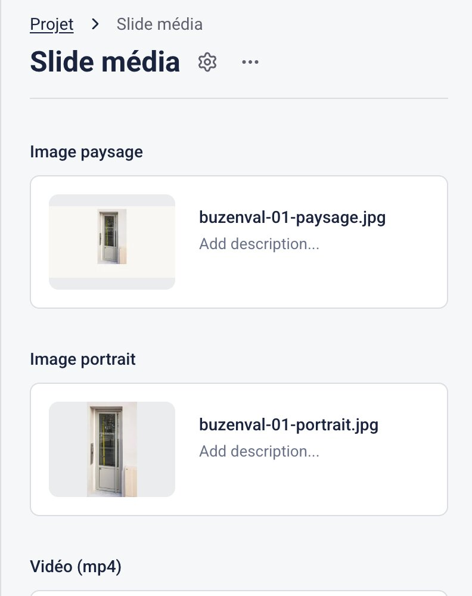
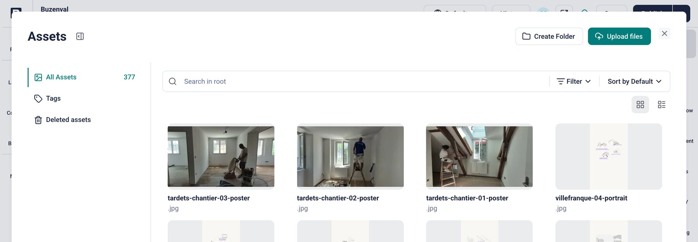
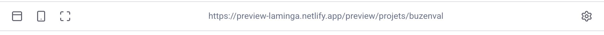
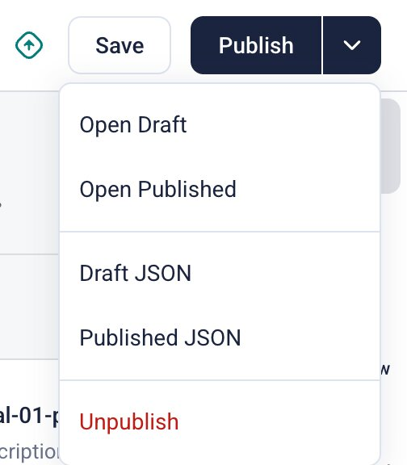

À toute l'équipe LaMinga. Aucune connaissance technique n'est nécessaire : chaque tâche est découpée en étapes courtes, avec une capture d'écran et ce qu'il faut vérifier.
Deux façons de travailler, au choix :
Tout le contenu du site (projets, textes, photos) vit dans Storyblok, un outil en ligne. Le site public se reconstruit automatiquement chaque fois que vous publiez.
Tant que vous n'avez pas cliqué sur Publish, personne d'autre que l'équipe ne voit vos changements. Enregistrez souvent avec Save, publiez une fois que tout est vérifié.
| À l'écran | Ce que ça veut dire |
|---|---|
| Content | La liste de toutes les pages du site (« fiches ») |
| Story | Une fiche : un projet, la page d'accueil, la page Atelier… |
| Assets | La photothèque : toutes les images et vidéos envoyées |
| Create new | Créer une nouvelle fiche |
| Save | Enregistrer le brouillon |
| Publish | Mettre en ligne |
| Unpublish | Retirer du site (la fiche reste dans Storyblok) |
| Add Asset / Upload files | Ajouter une image / envoyer un fichier depuis l'ordinateur |
| Slide média | Une image du carrousel (version ordinateur + version téléphone) |
Une photo d'appareil ou de téléphone pèse souvent 5 à 15 Mo. L'outil la ramène à moins de 1 Mo sans perte visible, la remet à l'endroit et corrige ses couleurs. C'est ce qui garde le site rapide et net (chapitre 1).
L'aperçu montre la page exactement comme elle sera en ligne. Regardez aussi la version téléphone : c'est là que la plupart des visiteurs découvriront vos projets.
Pour retirer un projet du site, on le dépublie, on ne le supprime pas. Une image supprimée reste récupérable dans Assets → Deleted assets : ne videz jamais cette corbeille.
| Quoi | Où | Pour |
|---|---|---|
| Storyblok | app.storyblok.com — votre adresse e-mail et votre mot de passe | Modifier le contenu |
| Aperçu | Un identifiant et un mot de passe dédiés, fournis par votre référent technique | Voir les brouillons dans Storyblok (une fois par navigateur, page 14) |
| Site public | laminga.netlify.app | Vérifier après publication |
| Claude | Application Claude Desktop, compte Pro de l'agence | Publier avec Claude (chapitre 3) |
Gardez les identifiants dans le trousseau de votre Mac ou un gestionnaire de mots de passe, jamais dans un document partagé.
Une étape commune aux deux façons de travailler. Les photos d'un projet doivent être allégées avant d'arriver sur le site : c'est la condition pour qu'il reste rapide et que les images restent belles.
Une petite application posée sur votre bureau. Vous y glissez des photos ou un dossier entier ; elle produit des copies prêtes pour le site. Vos originaux ne sont jamais modifiés.
Dans Claude Desktop, ouvrez le dossier « LaMinga-Claude » (page 19) et écrivez : « Installe l'outil photo LaMinga sur mon bureau. » L'icône Optimiser pour le web apparaît sur le bureau.
Depuis le Finder, glissez une ou plusieurs photos, ou le dossier complet du projet, sur l'icône. Formats acceptés : JPG, PNG, HEIC (iPhone), TIFF, WebP.
Une fenêtre indique combien d'images sont prêtes, et signale celles qui posent problème.

À côté de chaque photo, un dossier web contient la version allégée (en .jpg, nom sans accents ni espaces). C'est uniquement ce fichier-là que vous envoyez dans Storyblok.
Une image signalée trop petite (capture d'écran, image récupérée sur internet) sera floue en plein écran. Demandez l'original au photographe, ou écartez-la.
Storyblok recadre et adapte les images tout seul, mais il ne peut pas agrandir une image trop petite. Visez ces tailles minimales (le plus grand côté de la photo) :
| Emplacement | Forme | Taille minimale |
|---|---|---|
| Carrousel — image paysage (ordinateur) | 16:9, à l'horizontale | 1920 px |
| Carrousel — image portrait (téléphone) | 3:4, à la verticale | 1200 px |
| Photo de couverture | 4:3 | 1200 px |
| Plan masse (noir et blanc) | 4:5 | 1000 px |
| Fonds de la page Atelier | 16:9 | 1920 px |
| Portrait d'un membre de l'équipe (N&B) | carré | 1000 px |
Inutile de convertir en WebP ou de réduire vous-même : l'outil photo et Storyblok s'en chargent. Ne recadrez que si la composition l'exige.
Les vidéos du site sont muettes et tournent en boucle. Storyblok ne les compresse pas : il faut le faire avant l'envoi avec HandBrake (gratuit, handbrake.fr).
| Réglage HandBrake | Valeur |
|---|---|
| Summary → Format | MP4, case Web Optimized cochée |
| Dimensions | largeur maximale 1920 |
| Video | H.264 (x264), Constant Quality RF 24 |
| Audio | supprimer la piste (Remove) |
| Poids visé | 5 Mo maximum : sinon monter le RF à 26–28 ou raccourcir |
Prenez une image du même plan (capture de la vidéo en pause) et passez-la dans l'outil photo. Elle s'affiche pendant le chargement et sur les téléphones en mode économie.
Créer un projet, le modifier, le mettre en avant sur la page d'accueil, le retirer du site. Chaque fiche pratique tient sur une ou deux pages.
Ouvrez app.storyblok.com, connectez-vous, puis cliquez sur l'espace LaMinga.
Dans le menu de gauche, cliquez sur Content.

1| Fiche | Ce qu'elle contient |
|---|---|
| Accueil | Le carrousel de la page d'accueil |
| Projets (dossier) | Une fiche par projet, plus la page « Projets » elle-même |
| Atelier | La page Atelier : manifeste, clients, équipe |
| Programmes (dossier) | Les catégories de projets (Habitat social, Enseignement…) |
| Réglages | Coordonnées, adresses, réseaux sociaux, mentions légales |
Avant de commencer : les photos du projet sont passées dans l'outil photo, et le texte est prêt (titre, ville, descriptif, cartouche).
Content → cliquez sur le dossier Projets.
En haut à droite : Create new → Story.

Puis cliquez sur Create.
Storyblok propose « Page » par défaut. Une fiche créée en « Page » n'a pas les champs d'un projet et n'apparaîtra pas sur le site. Si c'est arrivé : supprimez cette fiche vide et recommencez.

La fiche s'ouvre : à gauche l'aperçu de la page, à droite le formulaire. En haut à droite, Save et Publish.

1 2Titre, Ville, Description du programme (une ligne), Maîtrise d'ouvrage, Équipe (un intervenant par ligne), Statut, Surface, Montant HT, Divers (crédits photos), puis le Texte descriptif. Sous chaque champ, une aide grise donne un exemple.

Il manque une thématique ? Demandez à votre référent technique : une nouvelle thématique ne se met en ligne qu'avec la publication suivante d'une fiche.
Dans le champ Carrousel, cliquez sur + → Slide média. Chaque slide associe :

+ Add Asset → Upload files → choisissez le fichier dans le dossier web → cliquez sur l'image pour la sélectionner. Remplissez ensuite la description (« Buzenval — façade sur rue, Paris 20e ») : elle est lue par les malvoyants et par Google.

L'ordre des slides = l'ordre du carrousel. Glissez une slide par sa poignée pour la déplacer.
Cliquez sur Save. Faites-le souvent : rien n'est encore visible du public.
L'aperçu à gauche se met à jour. Utilisez les icônes au-dessus pour passer en vue téléphone ou en plein écran.
C'est normal la première fois. Cliquez sur l'icône ↗ (ouvrir dans un nouvel onglet), saisissez l'identifiant et le mot de passe de l'aperçu, puis revenez dans Storyblok et rechargez la page. Votre navigateur s'en souviendra.

Tout est bon ? Cliquez sur Publish. Le site public se met à jour en 2 à 5 minutes.
Ouvrez laminga.netlify.app/projets : le projet apparaît dans la grille et sous ses filtres.
Content → Projets → cliquez sur le projet. La recherche en haut de la liste aide à le retrouver.
Comme pour une création (pages 13 et 14).
Ouvrez la slide → survolez l'image → bouton de suppression de l'image (dans le champ, pas dans la photothèque) → + Add Asset → envoyez la nouvelle version préparée.
L'ancienne image reste dans la photothèque : c'est voulu, elle peut encore servir ailleurs. Le ménage se fait de temps en temps, avec votre référent technique.
Ouvrez la fiche Accueil → champ Carrousel → + → slide d'accueil.
Choisissez les images (paysage + portrait), puis dans Projet sélectionnez le projet : son titre et sa ville s'affichent automatiquement sur la photo.
Glissez la slide à la bonne place, Save, vérifiez, Publish.
Fiche Atelier : quatre sections qui défilent (vidéo, manifeste, clients, équipe).
Compressez-la avec HandBrake (page 7), et préparez son poster avec l'outil photo.
Dans la slide : champ Vidéo (mp4) → + Add Asset → Upload files. Puis Poster vidéo → l'image fixe.
Recompressez avant l'envoi : une vidéo lourde ralentit tout le site, surtout sur téléphone.
Ouvrez la fiche → flèche à droite de Publish → Unpublish.

Après quelques minutes, le projet n'apparaît plus sur laminga.netlify.app/projets. Pour le remettre : Publish.
Claude lit le dossier du projet, prépare les photos, remplit la fiche en brouillon et vous envoie le lien d'aperçu. Rien n'est mis en ligne sans votre « oui ». L'installation se fait une seule fois, en une vingtaine de minutes.
Téléchargez l'application sur claude.ai/download, installez-la, et connectez-vous avec le compte Pro de l'agence.
Pour que Claude accède aux photos des projets, le Drive doit apparaître dans le Finder. Installez Google Drive pour ordinateur (google.com/drive/download), connectez-vous : un emplacement « Google Drive » apparaît dans la barre latérale du Finder.
Les textes en Google Docs, eux, sont lus par le connecteur Google Drive de Claude (étape 3). À défaut, il suffit de copier-coller le texte dans la conversation.
Dans Réglages → Connecteurs, Storyblok et Google Drive apparaissent comme connectés.
Ce dossier contient les consignes qui font de Claude un assistant LaMinga : le ton, les règles de sécurité, la façon de remplir une fiche, et l'outil photo.
Téléchargez LaMinga-Claude.zip (transmis par votre référent technique), double-cliquez dessus, et rangez le dossier obtenu dans Documents.
Dans Claude Desktop, ouvrez l'onglet Code, choisissez le dossier Documents › LaMinga-Claude, puis démarrez une conversation. Faites-le à chaque fois que vous travaillez sur le site.
Si Claude répond qu'il n'a pas accès à Storyblok : revenez à l'étape 3, puis ouvrez une nouvelle conversation.
Écrivez : « Installe l'outil photo LaMinga sur mon bureau. » (page 6).
Ouvrez toujours le lien d'aperçu avant de dire « publie » : Claude peut se tromper sur l'ordre des photos ou une légende.
| Vous dites | Claude fait |
|---|---|
| « Remplace les photos de Texel par celles du dossier Texel-v2. » | Prépare, envoie, relie les nouvelles photos en brouillon. |
| « Corrige la surface de Buzenval : 210 m². » | Modifie le champ, en brouillon. |
| « Mets Brise-Lames en premier sur la page d'accueil. » | Réordonne le carrousel d'accueil, en brouillon. |
| « Ajoute Marie Dupont à l'équipe, photo dans le dossier Équipe. » | Ajoute le membre sur la page Atelier, en brouillon. |
| « Retire le projet Europan du site. » | Vous demande confirmation, puis le dépublie. |
Claude Desktop affiche une demande avant certaines actions (lire un dossier, envoyer une image, modifier une fiche). Claude vous dit juste avant ce qu'il s'apprête à faire : si cela correspond, cliquez sur Autoriser. Dans le doute, refusez et posez la question.
Pour un nouveau projet, ouvrez une nouvelle conversation (toujours dans le dossier « LaMinga-Claude ») : Claude reste plus précis.
| Ce que vous voyez | Quoi faire |
|---|---|
| L'aperçu affiche « Authentication required » | Ouvrir l'aperçu dans un onglet (icône ↗), saisir les identifiants de l'aperçu, recharger Storyblok. |
| J'ai publié mais le site n'a pas changé | Attendre 5 minutes, puis recharger la page (Cmd + Maj + R). Toujours rien après 15 minutes : prévenir le référent technique. |
| Ma fiche projet n'a pas les bons champs | Elle a été créée en « Page » : la supprimer et recréer en « Projet » (page 10). |
| Une photo apparaît couchée ou aux couleurs ternes | Elle n'est pas passée par l'outil photo : la préparer et la renvoyer. |
| Une photo est floue en plein écran | Elle est trop petite : demander l'original. |
| L'outil photo affiche « illisible » | Format non pris en charge (PDF, Photoshop…) : exporter en JPG, ou demander à Claude. |
| Le Mac refuse d'ouvrir l'outil photo | Clic droit sur l'icône → Ouvrir → Ouvrir. |
| Claude dit ne pas avoir accès à Storyblok | Réglages → Connecteurs → vérifier Storyblok, puis nouvelle conversation. |
| Claude ne trouve pas le dossier du projet | Vérifier que Google Drive pour ordinateur est ouvert (icône dans la barre de menus) et lui donner le nom exact du dossier. |
| J'ai publié une erreur | Corriger et republier tout de suite. Pour revenir à une version précédente : History en haut de la fiche, ou le référent technique. |
| J'ai supprimé une image par erreur | Assets → Deleted assets → la restaurer. |
Toute photo passe par l'outil photo · on vérifie l'aperçu avant de publier · on dépublie, on ne supprime pas.